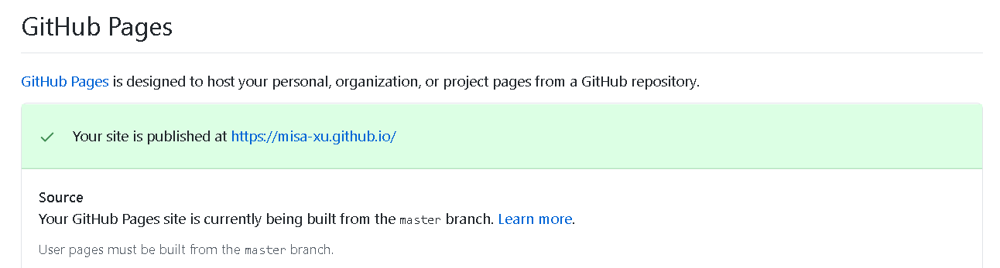
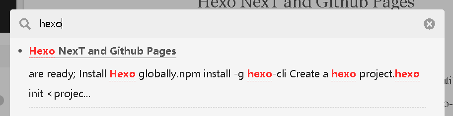
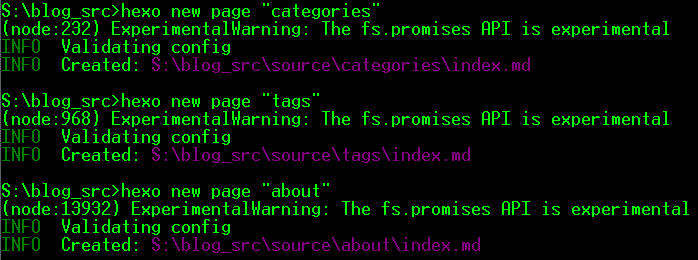

Hexo is a prominent framework for building personal websites, with a good compatibility with Markdown, MathJax and NPM packages. As a matural ecosystem, there're hundreds of easy-to-use themes and plugins with detailed documentations available on the official website.
Among them, NexT is the preferable one as it not only provides a elegent and customizable appearance, it also integrates with tons of commonly-used tools like git-commit, google analytics, quicklink, Valine etc. In most cases, modifying config file is enough to activate those functions.
In this article, I will not repeat the contents that have already been well-informed on the official website; Just links towards such contents will be provided. Instead, I will introduce some add-on functions and emphasize on the points where I used to get stuck in.
Create Repository
- Create a new Repository named
<user-name>.github.io. - Find the section
<Your Repo> / Settings / Options / Github Pages, set theSourcebeMaster Branch
Configurate Development Environment
- Make sure Node.js and NPM are ready; Install
Hexoglobally.1
npm install -g hexo-cli
- Create a hexo project.
1
2
3hexo init <project-name>
cd <projectname>
npm install - Download the theme
NexT.1
2npm install
git clone https://github.com/theme-next/hexo-theme-next themes/next - Apply the theme
NexT. Under the root directory of the project, you will find_config.ymlinside it. Inline 101, set the theme tonext1
theme: next
- Update
NexT.1
2cd themes/next
git pull - Configurate
NexT. Please visit https://hexo.io/docs/configuration.html to learn the configuration of the hexo project. Please Visit https://theme-next.iissnan.com/ to learn the configuration of the themeNexT.
Commonly-used Commands
Please Visit https://hexo.io/docs/commands.html for further details.
Create New Page
1 | hexo new [layout] <title> |
Creates a new .md file. If the title contains spaces, surround it with quotation marks. [layout] is optional. If a customized layout is preferred, put it under <root-dir>/scaffolds and passing the name of it when creating.
Run Website Locally
1 | hexo s --debug |
The command above will set up a localhost server for testing. The port number by default is 4000, change it by passing -p <port-number> if required; --debug is also optional.
During running, all changes in _config.yml of NexT, and in <root-dir>/sources/ will be rendered instantly.
Generate Static files
1 | hexo g --debug |
All static files will be put in <root-dir>/public
Clean the output
1 | hexo clean |
This will remove the db.json and and <root-dir>/public/
Deploy to Github
Define Deploy Behavior to Github
Install Library
1 | npm install hexo-deployer-git |
Configurate
_config.yml under <root-dir>, find the deploy section in the end of the file
Basic Settings
Just define the colum repo as the address of your repository 1
2
3
4deploy:
type: git
repo: https://github.com/Misa-XU/misa-xu.github.io.git
branch: master
Skip the Authentication Process
1 | deploy: |
Plugin Configuration
-MathJax
The - before MathJax in the title is intended. As before loading, Js will check whether MathJax is defined. Directly naming a title called MathJax will make it be defined; Then unexpected errors happen.
Configurate
In <root-dir>/themes/next/_config.yml, set enable of MathJax be true. 1
2
3mathjax:
enable: true
mhchem: false # If chemistry formula is required
Usage
In the front matter of the article, set the usage of mathjax be true 1
mathjax: true
\[\begin{align} a &= b + c \label{eq3} \\ x &= yz \label{eq4}\\ l &= m - n \label{eq5} \end{align}\]
Local Search
Install
1 | npm install hexo-generator-searchdb --save |
Configurate
Under _config.yml under <root-dir>, add the following block at arbitrary position.
1 | search: |
Activate
In <root-dir>/themes/next/_config.yml, enable local search 1
2local_search:
enable: true
Usage
Click Search on the side bar, and input keywords 
SiteMap
Install
1 | npm install hexo-generator-sitemap --save |
Configurate
In <root-dir>/_config.xml, add the following
1 | plugins: hexo-generator-sitemap |
Usage
For each generate operation, a sitemap called sitemap.xml will be automatically created under <root-dir>/public/
Create Content
Create New Page
One should run the following command to create new page.
1 | hexo new [layout] <title> |
layout by default is post, which could be edited at default_layout in _config.yml under <root-dir>. Other layouts available are page and draft. If you don’t want your posts processed, you can set layout: false in front-matter. Depending on the type of layout, the page will be put into different folder:
| Layout | Path |
|---|---|
| post | source/_posts/ |
| page | source/ |
| draft | source/_drafts/ |
Drafts
Create Draft
1 | hexo new draft <title> |
Publish Draft
1 | hexo publish draft <title> |
Catogories, Tags, and About Page
Create
1 | hexo new page "categories" |

Configurate
And add the attribute type to each page in front matter.
1 | --- |
Front matter
Front matter is a block enclosed by --- at the beginning of the file that is used to configurate the articles. Besides types, mathjax, comments that mentioned above, tags and categories are also widely used attributes. For details, please visit https://hexo.io/docs/front-matter for your information.
1 | categories: |
Add Images
Personally, I prefer the one mark-down file one media folder structure, so in the <root-dir>/_config.yml I turned the flag post_asset_folder on.
Configurate
1 | post_asset_folder: true |
So once a new markdown file is created, a folder with same name would be created, too. Then we could put relevant images inside it.
Usage
1 |  |
Qoute Block
Center Block Qoute
There are two styles available. 1
<blockquote class="blockquote-center"> Hey Jude, Don't Be Afraid </blockquote>
Hey Jude, Don't Be Afraid
1 | {% centerquote %}Hey Jude, Don't Be Afraid{% endcenterquote %} |
Hey Jude, Don't Be Afraid
Note Block
1 | {% note <type> %} Content {% endnote %} |
Here type could be
default
primary
success Could You See \(\sqrt{2}\)
info Code Could Also Be Rendered
warning CAUTION!
danger KEEP OUT!
Excerpt
Just add <!-- more --> after abstract.
Tab
Content 1
Content 2
Content 3
1 | {% tabs <Name of Tab Group>, <Index of Default Tab, 1-based Index, -1 for Hiding Contents>%} |